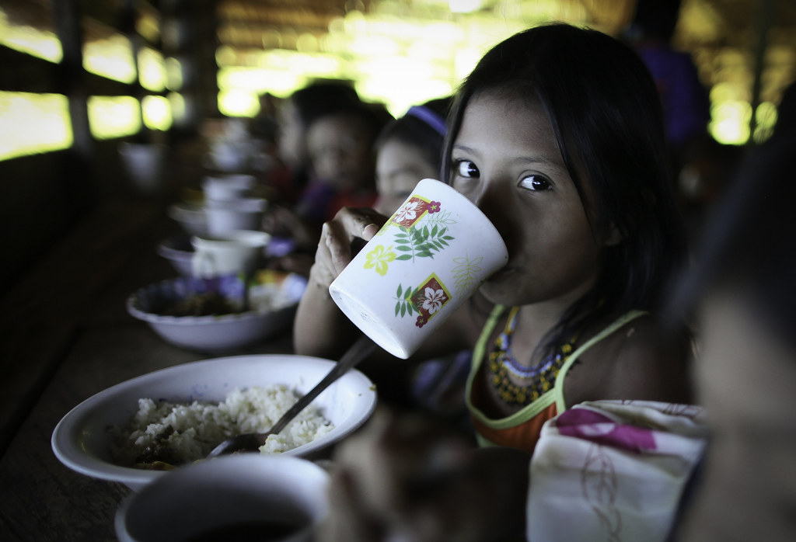

1.Protection for Tagaeri and Taromenane groups
 The indigenous groups living in the Yasuni National Park territory are in constant danger and do not deserve to live
in such unstable environment. The oil companies threat does not only out their natural resources and agricultural goods in danger; it also
puts these indegenous people's health and life span in danger. The side effects of oil liking on the soil and water has more consequences that
we can imagine. We pray that God will protect these people and do justice to their cause and keep the most vulnerable groups in this community
(children, pregnant women and the elderly) physically and mentally healthy.
Also, because of the lack of resources and limited contact with the outside world, treating diseases and secondary effects caused by oil pollution
is especially hard. Prayer for medical help and regular check-ups is high;y needed, as well.